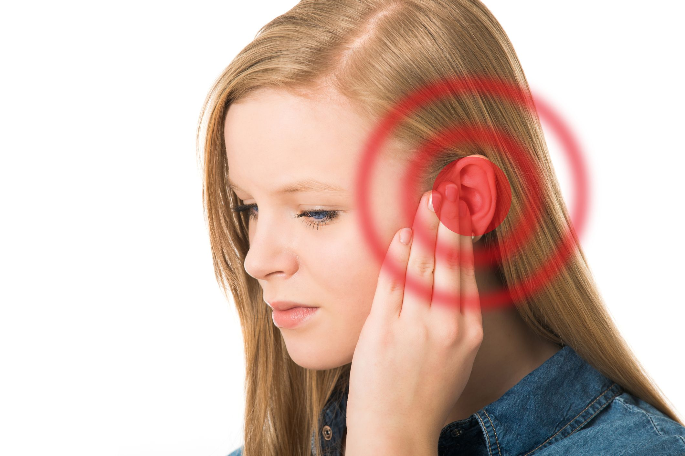

နားအူနေပြီဆိုရင် ဘာတွေဖြစ်နိုင်သလဲ ???????

နားအူခြင်းဝေဒနာဟာ လူအတော်များများကြုံတွေ့ရနိုင်တဲ့ ဝေဒနာတမျိုး ဖြစ်ပါတယ်။
လေ့လာချင်တွေအရ အယောက်တရာမှာ ၁၅ ယောက်ကနေ အယောက်၂၀ လောက်ထိ နားအူခြင်း ဝေဒနာ ခံစားရနိုင်ခြေရှိကြောင်း သိရပါတယ်။
နားအူတယ်ဆိုတာဟာ ပြင်ပမှာတကယ်ဖြစ်နေတဲ့ အသံမရှိဘဲနဲ့ မိမိနားထဲမှာ ဆူညံသံတွေကြားနေရခြင်းဖြစ်ပါတယ်။
နားအူတဲ့အခါ ကြားရတဲ့ဆူညံသံတွေဟာ တယောက်နဲ့ တယောက် မတူတတ်ပါ။
တဝီဝီကြားရတာ၊ တဒေါက်ဒေါက်ကြားရတာ၊ လေချွန်သံလိုကြားရတာ၊ စူးစူးရှရှအသံကြားရသံ၊ ခိုငြီးသံလိုကြားရတာ၊ လေတိုးသံလိုကြားရတာ၊ တူထုသံလိုကြားရတာ စသဖြင့် အမျိုးမျိုး ကြားရတတ်ပါတယ်။
တခါတရံမှာ ဘာသံမှန်းမသိ ရောနှောဆူညံနေသလိုမျိုးလည်း ကြားရတတ်ပါတယ်။
နားတဖက်တည်းမှာပဲ ဖြစ်နိုင်သလို နှစ်ဖက်လုံးလည်း ဖြစ်နိုင်ပါတယ်။
နားအူခြင်းဟာ ရောဂါတခုမဟုတ်ပါ။ အောက်ခံအကြောင်းရင်း ပြဿနာတစုံတခုရှိနေခြင်းကို ပြတဲ့လက္ခဏာတခုပဲ ဖြစ်ပါတယ်။
နားအူခြင်းကို ဆေးပညာအရ Tinnitus လို့ခေါ်ပါတယ်။
နားအူခြင်းဟာ နားအတွင်းမှာရှိတဲ့ မွှေးညှင်းနုဆဲလ်လေးတွေ (inner ear hair cells) ထိခိုက်တာကြောင့် ဖြစ်ပါတယ်။
ကျွန်တော်တို့ရဲ့ နားအတွင်းထဲ (Inner ear) မှာ မွှေးညှင်းနုလေးတွေရှိပြီး အဲ့မွှေးညင်းနုလေးတွေဟာ အသံရဲ့ ဖိအားအတိုင်း လှုပ်ရှားကြပါတယ်။
ဒီမွှေးညင်းနုလေးတွေ လှုပ်ရှားတာဖြစ်တဲ့အခါ မွေးညှင်းနုဆဲလ်လေးတွေကို သွားလှုံ့ဆော်ပြီး ဆဲလ်လေးတွေက လျှပ်စစ်အချက်ပြသင်္ကေတ (electrical signal) တွေထုတ်ကာ Auditory nerve မှတဆင့် ဦးနှောက်ဆီကို ပို့ပါတယ်။
ဦးနှောက် လက်ခံရရှိတဲ့ လျှပ်စစ်အချက်ပြသင်္ကေတတွေကို အသံအဖြစ် ပြန်ပြောင်းဖတ်ယူပါတယ်။
အကြောင်းကြောင်းကြောင့် နားအတွင်းပိုင်း မွှေးညင်းနုတွေ ထိခိုက်ပျက်စီးတဲ့အခါ အချက်ပြသင်္ကေတတွေပို့တာ မမှန်တော့ဘဲ နားအူခြင်းကို ခံစားရပါတယ်။
နားအတွင်းပိုင်းမွှေးညင်းနုလေးတွေကို ထိခိုက်ပျက်စီးစေပြီး နားအူခြင်းကို ဖြစ်စေနိုင်တဲ့အကြောင်းတွေကတော့
– ပြင်းထန်အားကောင်းသော ဆူညံသံများနဲ့ အချိန်ကြာမြင့်စွာ ရေရှည်ထိတွေ့မှုများတာ (ဥပမာ – ရှိုးပွဲတွေ၊ အားကစားပွဲတွေ၊ စက်ရုံအလုပ်ရုံတွေမှာ အလုပ်လုပ်ရတာ၊ နားကြပ်နဲ့ သီးချင်းတွေကို အကျယ်ကြီးဖွင့်ကာ ရေရှည်နားထောင်တာ)
– အသက်အရွယ်ကြီးရင့်လာတာ
– နားဖာချေးပိတ်နေတာ
– စိတ်ရောကိုယ်ပါ ပင်ပန်းနွယ်နယ်မှုများတာ
– အချို့သောဆီးဆေးတွေ၊ အကိုက်အခဲပျောက်ဆေးတွေ၊ ပိုးသေဆေးတွေ၊ သွေးကျဲဆေးတွေသောက်တာ
– Meniere’s disease လို့ခေါ်တဲ့ နားအတွင်းပိုင်းရေအိတ်တည်တဲ့ ရောဂါဖြစ်တာ
– Acoustic neuroma ခေါ် နားအတွင်းအာရုံကြောမှာ အလုံးအကျိတ်ဖြစ်တာ
– ဦးခေါင်းနဲ့ လည်ပင်းထိခိုက်ဒဏ်ရာရတာ၊ အလုံးအကျိတ်တည်တာ
– သွေးတိုးရောဂါရှိတာ
– သွေးကြောတွေ နံရံထူပြီးမာလာတာ စသဖြင့် အကြောင်းရင်းတွေများစွာရှိပါတယ်။
တခုကံကောင်းတာက နားအူခြင်းဟာ အများအားဖြင့် ရောဂါကြီးကြီးမားမားနဲ့ ဆက်နွယ်တာမျိုးဖြစ်တာရှားပြီး ရက်အနည်းငယ်ကြာတဲ့အခါ မှာ သူ့ဘာသူ ပြန်ပျောက်တတ်ပါတယ်။
နားအူခြင်းဝေဒနာခံစားရတဲ့အခါ နားထဲအသံဆူနေတဲ့အတွက် နေမထိထိုင်မသာဖြစ်ပြီး အာရုံစူးစိုက်နိုင်စွမ်း၊ စဉ်းစားနိုင်စွမ်းကို ထိခိုက်စေပါတယ်။
ဒါ့အပြင် ညဘက်မှာလည်း ကောင်းကောင်းအိပ်လို့ မရတာမျိုး ဖြစ်နိုင်ပါတယ်။
နားအူခြင်းဝေဒနာ ခံစားရတဲ့အခါ သက်သာအောင်
– ကျယ်ကျယ်လောင်လောင် ဆူညံသံတွေကို ရှောင်ပါ။
– ကတ်ဆက်၊ ရေဒီယို၊ တီဗီဖွင့်ပြီး တေးသံသာလေးတွေ နားထောင်ပါ။ ရေကျသံ ရေလှိုင်းသံ စတဲ့တီးလုံးသံလေးတွေပါတဲ့ အသံဖိုင်လေးတွေ အာရုံစိုက် နားထောင်ရင် ပိုကောင်းပါမယ်။
– ညဘက်အိပ်မရရင် အဲဒါလေးတွေ ဖွင့်နားထောင်အိပ်ပါ။
– အရက်၊ ဆေးလိပ်နဲ့ ကဖင်းဓါတ်ပါတဲ့ အစားအသောက်တွေကို ရှောင်ပါ။
– ကိုယ်လက်လှုပ်ရှားမှု ပုံမှန်လုပ်ပေးပါ။ ဗီတာမင်ဘီနဲ့ ဇင့် အားဆေးသောက်ပေးပါ။
တကယ်လို့ ဒီလိုတွေလုပ်ပေးလို့မှ မသက်သာရင်၊ တပတ်ကျော်တဲ့အထိ နားကအူနေရင်၊ နားအူတာပိုဆိုးလာရင်တော့ ဆရာဝန်နဲ့ပြသစမ်းသပ်ပြီး နားအူရတဲ့အကြောင်းရင်းရှာဖို့လိုပါတယ်။
စမ်းသပ်စစ်ဆေးမှုတွေအနေနဲ့ကတော့ အကြားအာရုံစမ်းသပ်စစ်ဆေးတာ၊ သွေးပေါင်ချိန်တာ၊ ကွန်ပျူတာဓါတ်မှန်ရိုက်တာ၊ သံလိုက်ဓါတ်မှန်ရိုက်တာ စသဖြင့်လုပ်ရနိုင်ပါတယ်။
ကုသမှုအနေနဲ့ကတော့ ဖြစ်တဲ့အကြောင်းရင်းပေါ်မူတည်ပြီး သွေးတိုးတာဆိုရင်သွေးကျဆေးပေးတာ၊ အသက်အရွယ်ကြီးလို့ဖြစ်တာဆိုရင် နားအကြားကိရိယာတပ်တာ၊ နားဖာချေးပိတ်လို့ဖြစ်တာဆိုရင်
ကိရိယာတွေသုံးပြီး စနစ်တကျနားဖာချေးဖယ်ထုတ်ပေးတာ စသဖြင့် လုပ်ရနိုင်ပါတယ်။
လိုအပ်ရင် နားအတွင်းပိုင်းအာရုံကြောခွဲစိတ်မှု (surgical section of cochlear nerve) ထိလုပ်ရတာမျိုးလည်းရှိနိုင်ပါတယ်။
Source-Dr 528